Da planilha de Excel a um sistema com rastreabilidade, validade e pedidos digitais.
Kaique · Alex · Wallyson · Bruno · Vinícius · José · Luiz
Público-alvo: gestores, almoxarifes e equipes clínicas do Hospital Odontológico.
Diziam: "o CEO não tem controle de estoque". Investigando o fluxo real, vimos que o CEO não tem estoque próprio — tudo depende do HO, a Dispensação que abastece os setores.
Recebemos a problemática com informação incompleta e lógica equivocada. Recolocá-la corretamente tornou a solução viável e escalável, e nos levou a documentar tudo para quem vier depois.
Gestão do board apoiada pelo MCP do Jira (ADR-0011): status e código sincronizados.
HTTP → Controller → Service → IRepo (porta) → PgRepo (adapter) → Postgres
│
▼ domain/ (puro: status derivado, FEFO)domain/pedido.ts → statusDerivadoDoPedido() · coberto por testes unitários.
| ADR | Decisão | Alternativas rejeitadas |
|---|---|---|
0005 | Auth JWT + RBAC | sessão server-side; OAuth |
0006 | Drizzle ORM | Prisma; SQL cru; TypeORM |
0007 | Camadas / Ports & Adapters | controllers gordos; Active Record |
0008 | Pedido + status derivado | status manual; 1 pedido = 1 item |
0010 | Docker (4 containers) | VM direta; subdomínio; PaaS |
0011 | IA no fluxo de trabalho | uso ad-hoc; gestão manual |
11 ADRs no total, cada uma com contexto, alternativas, consequências e link para o código.
Fluxo A — pedido ponta a ponta · Fluxo B — lotes & validade
Aplicação rodando localmente · stack Docker pronta para deploy

Atenção ao tempo · ~3,5 minnavegador → nginx (:80, /estoque-ho)
├── frontend (SPA React)
└── backend (Express :3000) → Postgres 16
[ rede interna do compose — só o nginx é exposto ]Stack pronta e validada localmente; o deploy no servidor é essencialmente um comando.
Backend e triagem prontos; a ingestão automática aguarda a caixa institucional.
Perguntas?
Documentação completa · lacavaalex.github.io/Controle-de-Estoque-CEO
Grupo 5 · Desenvolvimento de Software · CIn-UFPE · 2026